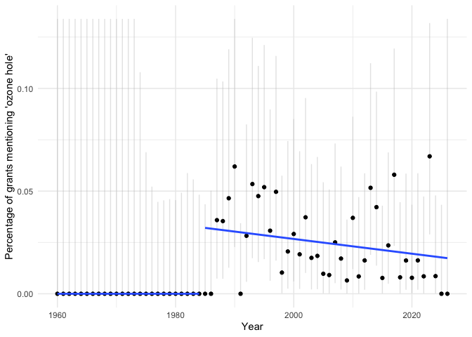
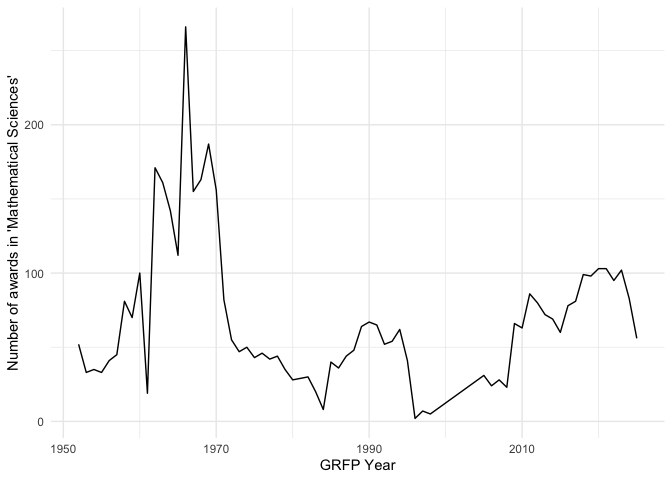

Unofficial package to interface with NSF API
It also has abstracts, dates, and more information for all grants up to March 28, 2026.
- Webpage with package information: https://bomeara.github.io/rnsf/
- Github page: https://github.com/bomeara/rnsf/
Installation
This package has a huge (>500 MB) R data file containing all the cached grant info (abstracts, money, institutions, etc.). I have stored it as a git large file storage file inside data. Thus, the usual approach to installing from github won’t work as the data won’t be loaded in the correct way. Instead, from a terminal or command line, on a computer with git and git-lfs installed, you will have to:
git clone https://github.com/bomeara/rnsf.git (note this is in your computer terminal, not an R session!)
and then use R CMD INSTALL rnsf to install the package (or, from within R, devtools::install('rnsf') or whatever the path is to the directory you have cloned).
If someone wants to make an easier way to do this, please reach out!
Examples
Getting cached data
This package caches data on over 500,000 funded NSF grants (it’s large, which is why the package will take a while to install, and why it will never be on CRAN with its 5 MB maximum size). You can use it.
This will give you a data.frame with all data: head(grants)
It has multiple date fields which are in “%m/%d/%Y” format (but everything is stored as a raw list, leaving to the user to process it).
New search
You can also do a new search. For example, to get all info on ants:
library(rnsf)
ants <- rnsf::nsf_return(keyword="Formicidae")
#> [1] "Finished first batch"Visualization

Topic frequency over time
The ozone hole was discovered in 1985: pollution led to a depletion of the ozone layer, which shields people (and other organisms) from a great deal of UV radiation. The world came together and passed the Montreal Protocol to limit the pollution, chlorofluorocarbons, that was causing the damage. The hole is healing, but still requires research and monitoring. We can see how NSF grants mentioning “ozone hole” changed over time (though not all grants mentioning “ozone hole” study this issue; some could be using it as a comparison to some other issue, for example). We can include a regression before and after 1985 and show the 95% CI for the proportion in each year (truncated by the y-axis limits).
library(rnsf)
library(ggplot2)
library(timeDate)
library(dplyr)
#>
#> Attaching package: 'dplyr'
#> The following objects are masked from 'package:stats':
#>
#> filter, lag
#> The following objects are masked from 'package:base':
#>
#> intersect, setdiff, setequal, union
library(viridis)
#> Loading required package: viridisLite
library(binom)
data(grants) # or use grants <- rnsf::nsf_get_all() to get the most current list (will take hours) or grants <- nsf_update_cached() to update from the last cached version
grants$ozone_hole <- grepl("ozone hole", grants$abstractText, ignore.case=TRUE)
grants$date <- as.Date(grants$date, format="%m/%d/%Y")
grants$year <- as.numeric(format(grants$date, "%Y"))
grants_by_year <- grants |> group_by(year) |> summarize(ozone = sum(ozone_hole), all = n()) |> ungroup()
grants_by_year$ozone_percent <- 100 * grants_by_year$ozone / grants_by_year$all
grants_by_year$ozone_lower_percent <- 100 * binom::binom.confint(x=grants_by_year$ozone, n=grants_by_year$all, method="exact")$lower
grants_by_year$ozone_upper_percent <- 100 * binom::binom.confint(x=grants_by_year$ozone, n=grants_by_year$all, method="exact")$upper
grants_by_year$ozone_upper_percent_truncated <- sapply(grants_by_year$ozone_upper_percent, min, 2*max(grants_by_year$ozone_percent))
g <- ggplot(grants_by_year, aes(x=year, y=ozone_percent, group=1))+ geom_errorbar(aes(ymin=ozone_lower_percent, ymax=ozone_upper_percent_truncated), colour="gray", alpha=0.4, width=0) + geom_point() + theme_minimal() + xlab("Year") + ylab("Percentage of grants mentioning 'ozone hole'") + geom_smooth(data=subset(grants_by_year, year<1985), se=FALSE, method="lm") + geom_smooth(data=subset(grants_by_year, year>=1985), se=FALSE, method="lm") + ylim(c(0, 2*max(grants_by_year$ozone_percent)))
print(g)
#> `geom_smooth()` using formula = 'y ~ x'
#> `geom_smooth()` using formula = 'y ~ x'
#> Warning: Removed 1 row containing missing values or values outside the scale range
#> (`geom_point()`).
Bergogram
We can plot funding over time, inspired by (but not endorsed by) Jeremy Berg’s graphs on federal funding (see https://jeremymberg.github.io/jeremyberg.github.io/). Also see https://grant-witness.us/funding_curves.html#nsf-graphs from Grant Witness.
grants$date <- as.Date(grants$date, format="%m/%d/%Y")
grants$year <- format(grants$date, "%Y")
grants$dayofyear <- timeDate::dayOfYear(timeDate::timeDate(grants$date))
grants$estimatedTotalAmt <- as.numeric(grants$estimatedTotalAmt)
grants <- grants |> arrange(year, dayofyear) |> group_by(year) |> mutate(estimatedTotalAmt_by_year = cumsum(estimatedTotalAmt)) |> ungroup()
grants <- grants[!is.na(grants$year),]
grants_recent <- subset(grants, year>=2020)
g <- ggplot(grants_recent, aes(x=dayofyear, y=estimatedTotalAmt_by_year/1e9, colour=year)) + geom_line() + theme_minimal() + xlab("Day of year") + ylab("Cumulative billions of dollars awarded") + scale_colour_viridis_d(option="turbo", begin=0.2)
print(g)
Table of award info
We can also look at a table with the number, not total money, of grants by state or territory by academic semester, for example (only including this year up to the last cache of the data).
library(tidyr)
library(knitr)
grants$academic_semester <- rnsf::date_to_academic_semester(as.Date(grants$date, format="%m/%d/%Y"))
grants_aggregated <- grants |> filter(academic_semester %in% apply(expand.grid(c(2024:2026), c(" Fall", " Spring")), 1, paste0, collapse="")) |> group_by(academic_semester, awardeeStateCode) |> summarise(total_awarded = n(), .groups = "drop_last") |> ungroup() |> tidyr::pivot_wider(names_from = academic_semester, values_from=total_awarded, values_fill=0) |> dplyr::arrange(desc(`2024 Fall`))
colnames(grants_aggregated) <- gsub(" ", " ", colnames(grants_aggregated))
colnames(grants_aggregated)[1] <- "Area"
grants_aggregated[,1] <- rnsf::abbreviation_to_state(unname(unlist(grants_aggregated[,1])))
knitr::kable(grants_aggregated)| Area | 2024 Spring | 2024 Fall | 2025 Spring | 2025 Fall | 2026 Spring |
|---|---|---|---|---|---|
| California | 508 | 752 | 361 | 586 | 70 |
| New York | 371 | 475 | 256 | 371 | 37 |
| Texas | 324 | 415 | 224 | 355 | 40 |
| Massachusetts | 327 | 410 | 189 | 305 | 18 |
| Pennsylvania | 243 | 282 | 165 | 233 | 26 |
| Illinois | 218 | 277 | 122 | 224 | 14 |
| Virginia | 161 | 227 | 89 | 139 | 14 |
| Florida | 184 | 225 | 105 | 179 | 24 |
| Michigan | 208 | 215 | 97 | 188 | 20 |
| North Carolina | 153 | 210 | 103 | 181 | 21 |
| Colorado | 111 | 183 | 73 | 146 | 9 |
| Arizona | 101 | 177 | 65 | 99 | 12 |
| Georgia | 137 | 171 | 78 | 147 | 11 |
| Indiana | 130 | 166 | 83 | 157 | 13 |
| Maryland | 118 | 147 | 79 | 129 | 21 |
| New Jersey | 123 | 146 | 90 | 138 | 10 |
| Washington | 97 | 144 | 68 | 106 | 7 |
| Ohio | 110 | 134 | 73 | 106 | 12 |
| Tennessee | 78 | 108 | 41 | 83 | 5 |
| Alabama | 63 | 105 | 51 | 74 | 14 |
| Wisconsin | 76 | 105 | 64 | 91 | 11 |
| South Carolina | 60 | 102 | 31 | 66 | 12 |
| District of Columbia | 51 | 101 | 42 | 55 | 9 |
| Minnesota | 79 | 101 | 47 | 62 | 3 |
| Rhode Island | 66 | 84 | 46 | 71 | 11 |
| Oregon | 68 | 83 | 41 | 65 | 5 |
| Iowa | 54 | 77 | 36 | 66 | 4 |
| Louisiana | 54 | 77 | 30 | 68 | 6 |
| Utah | 44 | 77 | 35 | 65 | 7 |
| Missouri | 74 | 76 | 64 | 63 | 14 |
| Connecticut | 66 | 63 | 52 | 66 | 6 |
| New Mexico | 34 | 62 | 21 | 38 | 5 |
| Oklahoma | 42 | 59 | 23 | 51 | 7 |
| Kansas | 29 | 58 | 14 | 34 | 7 |
| Nebraska | 39 | 55 | 22 | 44 | 1 |
| Hawaii | 15 | 53 | 16 | 28 | 2 |
| Kentucky | 36 | 51 | 28 | 40 | 1 |
| Delaware | 18 | 47 | 31 | 37 | 4 |
| Idaho | 16 | 43 | 16 | 31 | 2 |
| Nevada | 12 | 43 | 11 | 31 | 1 |
| New Hampshire | 21 | 36 | 21 | 35 | 1 |
| Mississippi | 38 | 35 | 19 | 35 | 3 |
| Alaska | 10 | 32 | 4 | 19 | 0 |
| Montana | 19 | 32 | 8 | 22 | 3 |
| Maine | 30 | 27 | 10 | 24 | 0 |
| Arkansas | 27 | 25 | 10 | 26 | 4 |
| West Virginia | 28 | 25 | 8 | 26 | 1 |
| South Dakota | 20 | 22 | 17 | 17 | 1 |
| Vermont | 13 | 22 | 12 | 13 | 3 |
| Puerto Rico | 7 | 20 | 9 | 14 | 0 |
| Wyoming | 10 | 19 | 7 | 18 | 1 |
| North Dakota | 11 | 12 | 9 | 21 | 1 |
| Virgin Islands of the U.S. | 0 | 3 | 1 | 1 | 0 |
| American Samoa | 0 | 1 | 0 | 0 | 0 |
| Guam | 0 | 0 | 2 | 1 | 0 |
GRFP data
The NSF Graduate Research Fellowship Program (GRFP) is one of NSF’s oldest and most impactful programs: it provides funding for three years of study for people in grad school, giving them flexibility (no need for a research or teaching assistantship); the stipends are also often higher than those for most grad students. Every year, names, affiliations, and research areas of awardees (those receiving the money) and those with honorable mentions are released here but you can only get one year at a time. I have manually downloaded them all and incorporated them into the package. To use:
You can then plot information or do other analyses. For example, the number of awards in Mathematical Sciences over time:
grfp_math <- grfp[grepl("Mathematical Sciences", grfp$Field.of.Study),] |> subset(award_level=="Awardee")
grfp_math$year <- as.numeric(grfp_math$year)
grfp_math_by_year <- grfp_math |> group_by(year) |> summarize(count=n()) |> ungroup()
g <- ggplot(grfp_math_by_year, aes(x=year, y=count, group=1)) + geom_line() + theme_minimal() + xlab("GRFP Year") + ylab("Number of awards in 'Mathematical Sciences'")
print(g)
And the frequency of different subfields of math, showing just the first twenty from the past ten years of awards:
library(stringr)
subfields <- stringr::str_to_title(gsub("Mathematical Sciences - ", "", grfp_math$Field.of.Study))
popularity <- t(t(sort(table(subfields), decreasing=TRUE)))
knitr::kable(head(popularity, 20))| Algebra Or Number Theory | 786 |
| Analysis | 749 |
| Mathematical Sciences | 539 |
| Applications Of Mathematics (Including Biometrics And Bi | 465 |
| Topology | 457 |
| Algebra, Number Theory, And Combinatorics | 328 |
| Probability And Statistics | 227 |
| Applied Mathematics | 221 |
| Logic Or Foundations Of Mathematics | 172 |
| Geometry | 139 |
| Statistics | 125 |
| Mathematical Biology | 76 |
| Operations Research | 76 |
| Biostatistics | 69 |
| Computational Mathematics | 48 |
| Geometric Analysis | 34 |
| Probability | 29 |
| Computational And Data-Enabled Science | 24 |
| Computational Statistics | 15 |
| Artificial Intelligence | 13 |
Updating the package
First, update the package version in the DESCRIPTION.
Then the directory containing the package source:
library(rnsf)
grants <- nsf_update_cached()
usethis::use_data(grants, overwrite=TRUE)
devtools::build_readme()
pkgdown::build_site()
system("git add */*")
system("git commit -m'automatic update of page and data' -a")
system("git push")If new GRFP results are out, download them, retitle them as Awardee or HonorableMention with year and .tsv (i.e., “Awardee2030.tsv”) and put them in the inst/extdata directory in the package source. Reinstall the package. Then,
Then do the usual git things.